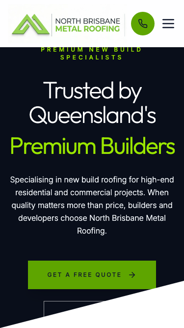

Your Website Audit
Your website looks professional, but several fixable issues are costing you calls and enquiries every week.
What's Working Well
Before we get into what needs fixing, let's recognise what you're already doing right:
- Your site looks modern and professional. The photography immediately shows quality metal roofing work, and the green branding is clean and consistent. First impressions matter, and visually you're ahead of many competitors.
- You've got the right contact information on desktop. Email and phone number are both visible in the header when someone visits from a computer, which makes it easy for customers to reach you.
- Your quote button stands out. The green call-to-action is prominent and matches your branding, which helps guide visitors toward getting in touch.
What's Holding You Back
Here are the specific issues that are costing you customers right now:
- Your website shows "Not Secure" in the browser. Your site doesn't have HTTPS security, which means when someone visits, their browser displays a warning that your site is not secure. Many people will close the tab immediately when they see this. It's also hurting your Google rankings — Google has penalised sites without HTTPS since 2018. For a business with zero Google reviews, this warning is driving away the exact customers you need most.
- Mobile visitors can't see your phone number. On a mobile phone, your header shows a green phone icon but no actual number. People have to guess whether tapping it will work. When someone's comparing roofers on their phone and ready to call, they'll often just go back to Google and ring the next business instead. Even losing 10-20% of potential calls this way adds up fast.
- You have zero Google reviews. Review count isn't just about trust — it's a major factor in how high you appear in local search results. Google ranks businesses with more reviews higher than those with few or none. Every completed job where you don't ask for a review is a missed opportunity to climb the rankings.
- Your first screen doesn't prove you're trustworthy. When someone lands on your site, they see a nice photo and a quote button, but nothing that says "we're licensed, insured, and other people have used us successfully." For high-value work like roofing, customers make trust decisions in seconds. Without visible proof — reviews, licence details, years in business — some visitors won't feel confident enough to enquire.
- Your headline might be confusing homeowners. Your main message says "Trusted by Queensland's Premium Builders" and talks about working with builders and developers. If a local homeowner needs their roof replaced or repaired, they might think you don't do residential work and leave. Being unclear about who you serve costs you enquiries from people who actually need your services.
- Google can't properly index your site. Your website is missing the technical setup (called "schema markup") that tells Google and AI search engines like ChatGPT what services you offer, where you're located, and how to contact you. Without it, even if you rank well, you won't appear in the map results, knowledge panels, or AI-generated answers that are increasingly how people find local businesses.
What Changes When We Fix This
When these issues are addressed, here's what you can expect:
- More people will actually call. A secure site with visible phone numbers and clear trust signals converts more visitors into phone calls. Even a 15-20% improvement in conversion means several extra enquiries per month from the traffic you already have.
- You'll rank higher in local search. Fixing the technical foundations (HTTPS, proper page titles, schema markup) plus building up your review count will improve where you appear when someone searches "roofer near me" or "metal roofing Brisbane."
- Customers will trust you faster. When visitors immediately see you're licensed, insured, local, and have happy customers, they move from "researching" to "ready to book" much more quickly. That means shorter sales cycles and less back-and-forth.
- You'll be visible in the AI search era. ChatGPT now handles billions of searches per month. When someone asks "who's a reliable roofer in North Brisbane," AI tools only recommend businesses with proper structured data. Getting this right now means you won't be invisible as search behaviour shifts.
- Mobile visitors will have a better experience. A properly optimised mobile site with visible contact info, fast loading, and clear calls-to-action means you capture more of the growing number of people searching and booking from their phones.
Quick Look at Your Current Site
 Your site on desktop — looks good but missing trust signals
Your site on desktop — looks good but missing trust signals

Your site on mobile — phone number not visible, button partially hiddenNext Step: 30-Minute Walkthrough
This audit shows where the opportunities are. In a 30-minute call, we can walk through exactly what changes would have the biggest impact for your business, show you examples of what the fixes look like, and answer any questions you have.
No pressure, no obligation — just a clear conversation about whether fixing these issues makes sense for you right now.
Ready to talk? Reply to this email or give us a call to find a time that works.